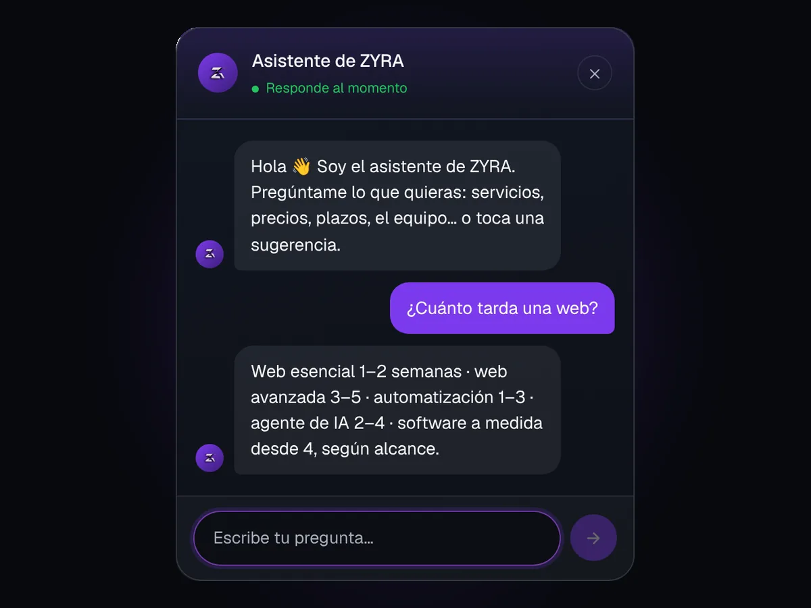

Primero el problema
La primera conversación trata de qué falla hoy en tu negocio, no de tecnología. Si no hace falta programar nada, te lo decimos.

Diseñamos webs, desarrollamos software y creamos soluciones de automatización e inteligencia artificial para ayudar a pymes y negocios a trabajar mejor y crecer.
Tecnología sin humo. Construimos lo que un negocio necesita de verdad: webs que representan bien a la marca, software que encaja con la forma real de trabajar y automatizaciones que devuelven horas cada semana.
La primera conversación trata de qué falla hoy en tu negocio, no de tecnología. Si no hace falta programar nada, te lo decimos.
Antes de entregar probamos con tus formularios, tus pedidos o las preguntas reales de tus clientes, no con ejemplos inventados.
Cada web, flujo o agente se entrega documentado, para que otra persona pueda revisarlo o mantenerlo sin nosotros.
Webs que representan bien al negocio.
El precio se cierra contigo por WhatsApp, según el alcance real del proyecto.
Ver desarrollo web
Pensado para cómo trabaja cada negocio.
El precio se cierra contigo por WhatsApp, según el alcance real del proyecto.
Ver software a medida
Menos tareas repetitivas, más tiempo para el negocio.
El precio se cierra contigo por WhatsApp, según el alcance real del proyecto.
Ver automatización
Un agente que atiende mientras el equipo se ocupa del resto.
El precio se cierra contigo por WhatsApp, según el alcance real del proyecto.
Ver agentes de IA
Cómo trabajamos
El mismo camino en los cuatro servicios. Cambia la tecnología, no la forma de trabajar.
Ver el proceso al detalle, servicio por servicioUna conversación para entender el problema real: qué falla hoy, qué se repite y qué esperas que cambie.
Definimos alcance, tecnología y tiempos, y te lo contamos antes de que empiece nada.
Construimos y probamos por fases, enseñando avances para que no haya sorpresas al final.
Se publica, se mide con uso real y se ajusta. El proyecto sigue vivo después de la entrega.
Tecnologías con las que trabajamos cada día
Por qué nosotros
Esta web y ZyraBus, nuestra app de horarios de guaguas en Tenerife, están hechas por el mismo equipo que hará tu proyecto. Puedes abrirlas y probarlas.
Publicamos guías con lo que explicamos a los clientes: qué pedir en un presupuesto, qué exige la ley a una web o qué tareas no merece la pena automatizar.
Dominio, alojamiento y herramientas quedan registrados a tu nombre. Si un día dejas de trabajar con nosotros, te lo llevas todo.
No garantizamos posiciones en Google ni cifras de ventas. Te decimos qué incluye cada servicio, qué no y qué limitaciones tiene.
Transparencia
Zyra es una agencia nueva y preferimos decirlo en vez de inventar cifras. Esto es lo que sí podemos prometerte.
ConócenosReseñas
Preguntas frecuentes
Una web esencial suele estar lista en 1–2 semanas. Software a medida o automatización dependen del alcance y se acuerda un calendario tras la primera llamada.
Depende del servicio: los proyectos cerrados suelen dividirse en un pago inicial y otro a la entrega; el mantenimiento y la automatización recurrente se facturan mensualmente.
Depende del alcance real, así que no publicamos tarifas cerradas. Nos cuentas qué necesitas por WhatsApp o formulario y te pasamos un presupuesto cerrado, sin partidas abiertas.
No. Puedes cancelarlo cuando quieras, sin penalización ni preaviso largo.
Lo hablamos y ajustamos presupuesto y plazos antes de seguir — nunca se añade trabajo extra sin que lo sepas de antemano.
Sí, con los planes de mantenimiento. Sin plan, seguimos disponibles para incidencias puntuales facturadas aparte.
Contacto
Cuéntanos qué necesita tu negocio y estudiamos la solución que mejor encaje. El precio se cierra contigo por WhatsApp, según el alcance real.